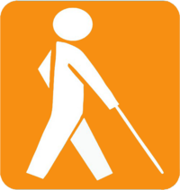
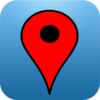
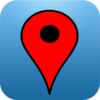

"Como se faz uma cidade inteligente?"
Quando decidimos participar da competição, esta era a maior dúvida que tínhamos, e logo notamos que o conceito de cidade inteligente era muito amplo...
- Uma cidade que seja auto-suficiente?
- Uma cidade que facilite as tarefas diárias?
- Uma cidade em que todos participem?
Percebemos, então, que antes desta, precisávamos responder outra pergunta:
"O que é uma cidade?"
Seria uma área geográfica delimitada?
O estatuto que reconhece esta área como uma organização política?
Uma cidade, é feita de pessoas.
Mais do que isso...
A cidade, são as pessoas.
Com isso esclarecido, conseguimos chegar no que seria o principal quesito da nosso app, que é...
Integração
uma forma de garantir que todos tenham as mesmas facilidades
...E se esta seria nossa maior preocupação, o desafio era propor uma forma de garantir que todos tivessem as mesmas facilidades. Por isso voltamos nossa atenção para algo muito importante, algo que, infelizmente, é muitas vezes deixado de lado, ou lhe é dado pouca atenção.
Acessibilidade


Acesso à locais
...de cultura, diversão e comércio
 
Existem muitos aplicativos preocupados em ajudar o usuário e encontrar a melhor festa para ir com os amigos, o melhor restaurante da cidade, o maior museu, etc.
Mas quantos destes se dedicam ao deficiênte fisico?
Ainda, como podemos saber se o melhor restaurante ou o maior museu estão preparados para receber um cadeirante? Ou auxiliar um cego a ler seus guias?
Tenho Acesso
O Tenho Acesso foi criado para satisfazer esta necessidade.
Inteligente é equalizar
de um dicionário qualquer na internet:
"Equalizar significa uniformizar, tornar igual."
Este é o slogan do Tenho Acesso.
Busca orientada
localizar rapidamente os locais em sua área que melhor se adequem as suas expectativas
Utilizando um sistema simples e intuitivo de busca orientada, o usuário é capaz de localizar rapidamente os locais em sua área que melhor se adequem as suas expectativas.
Relevância
utiliza a inteligência da rede
- locais mais próximos
- mais visitados por amigos
- mais pessoas gostaram
- que possuam melhorias voltadas à acessibilidade
- etc.
utilizando a inteligência da rede, o Tenho Acesso personaliza as buscas para cada usuário, classificando os resultados pela relevância destes de acordo com...
Classificação visual
resultados mais relevantes com maior tamanho e destaque
Pouco adianta presentar o usuário com números ou estrelas que podem nem ser percebidos. O que mais chama atenção, é o qúe está mais evidente.
O Tenho Acesso exibe, de uma forma simples e intuitiva, os resultados mais relevantes com maior tamanho e destaque, misturando conceitos de tag cloud com tendências modernas de flat design.


"O que você vê primeiro, é o melhor para você."
Esta é a ideia que o Tenho Acesso quer passar.
Auto aperfeiçoamento
aprende com o uso
O Tenho Acesso é um aplicativo que aprende com o uso, melhorando cada vez mais a experiência do usuário.
Se o usuário frequenta muitos museus, as categorias voltadas para Arte terão maior relevância para ele. Se ele almoça com frequência comida japonesa, restaurantes japoneses terão maior relevância para ele no horário de almoço.
Avaliação de locais
gostou deste local? (S/N)
opção de informar que melhorias o local possui
Após visitar um local, o Tenho Acesso pergunta ao usuário se gostou ou não do mesmo.
Simples assim, a forma de avaliação mais rápida, fácil e efetiva.
Adicionalmente, o usuário tem a opção de informar que melhoras o local possui (ou não) para seu tipo de deficiência. Dessa forma mantendo a base de dados sempre atualizada.

Oportunidades de negócio
- links patrocinados
- banners
- promoções
- etc.
Como estamos falando de locais, obviamente incluímos estabelecimentos comerciais, e com estes também vem oportunidades de negócio.
Estabelecimentos podem optar por adicionar conteúdo específico no aplicativo, inclusive aumentando sua relevância nas buscas
Esses conteúdos podem ser...
Relatórios de receptividade
...e oportunidades melhorias para os locais
Os estabelecimentos podem ainda acessar relatórios detalhados, fornecidos pelo Tenho Acesso, exibindo como seu público tem qualificado o local, quais seus pontos fortes e oportunidades de melhoria.
Enfim, ver como fazer para deixar o local ainda melhor e mais acolhedor.
Mais opções
- ...mais oportunidades
- ...mais integração
O sistema de busca orientada do Tenho Acesso pode ainda ser adaptado facilmente para outros públicos, ou outras necessidades.
- Cervejas disponíveis em bares, combinando com a preferência do usuário
- Promoções em lojas locais, combinando com produtos e serviços mais consumidos pelo usuário
- etc.